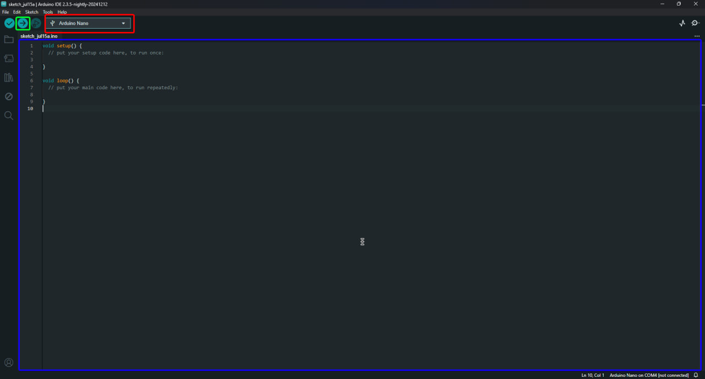
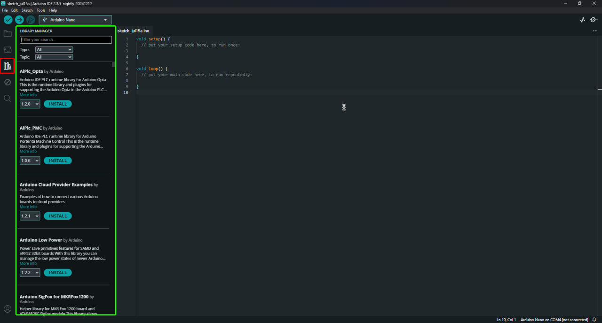

База нужная для моих проектов:
Провода у меня подписанны так в какой порт его нужно воткнуть на ардуино, На платах етсь 2 типа портов D тоесть цифровые и A тоесть аналоговые порты. Рассмотрим на примере 2 плат, Arduino NANO и Китайской Arduino UNO
Как мы видим на NANO плате(она справа) у нас подписаны и A и D порты, тоесть наример D9 или A5, На уно подписано немного подругому, D порты там подчркнуты и подписаны DIGITAL А аналаговые(A) порты подписанны как на нано тоесть A3, и так же подчеркнуты и подписанны ANALOG IN. Ещё на платах есть порты GND Это порт заземление или минуса, и порты 5V это порты питания или плюса. Если смотреть на макетную плату то снизу и сверху есть линии с плюслм и минусом. Они нужны для разводки питания, тоесть линюю плюса пождючаем в 5V на ардуино а линию минуса подлючаем в GND на ардуино. На ардуино уно есть порты SDA и SCL на ардуино нано они тоже есть, просто они там выведены в аналоговые порты а точнее в SDA это у нас A4 а SCL это у нас A5. Ниже представлена разводка питание по макетке на ардуино уно и нано.
Как заливать код на ардуино:
Да этого нам нужна Arduino IDE. Скачать можно на официальном сайте
Когда зашли не пугаемся, щас всё расскажу
Итак, красное это у нас то где надо выбрать порт и плату(сначала подлючите плату). Зелёное это кнопка загрузки кода на плату. Синее это место где мы пишем код
ОО а вот это библиотеки, они нужны для некоторых проектов. Все нужные библиотеки подписанны в разделе кода на странице проектов!
красное это кнопка чтобы отрыть менеджер библиотек, а зеленое это библиотека!
Если у вам остались вопросы пишете в сообщения телеграмм канала или в дискорд сервер по кнпокам ниже, я помогу!